THE SERVER (artist’s impression). it is out there. it is cold. it is serving you this page anyway.
loading…
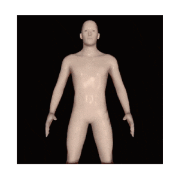
● RECCAM 01 · LOBBY
he has been checking on the site since 2003. he does not know the tab is still open.
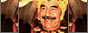
rescued from a dead geocities ring. i have no further information.
welcometomywebspace
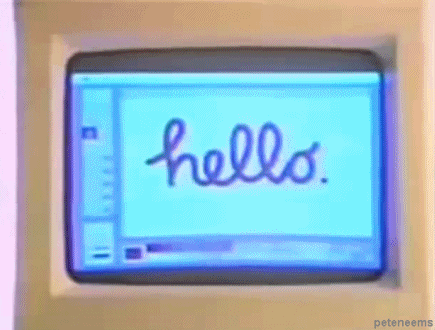
1999 ·
BEST VIEWED ON DESKTOP!!
hi...still figuring this out lol
i’ve been messing with the html and it kinda works?? don’t click around too much yet coz half the links are broken ;-)
i’m gonna add more posts when i get to it :')).
Cyberspace, 1996
Written in davos in answer to a telecommunications act.
RIP to the old net.
Governments of the Industrial World, you weary giants of flesh and steel, I come from Cyberspace, the new home of Mind. On behalf of the future, I ask you of the past to leave us alone. You are not welcome among us. You have no sovereignty where we gather.
We have no elected government, nor are we likely to have one, so I address you with no greater authority than that with which liberty itself always speaks. I declare the global social space we are building to be naturally independent of the tyrannies you seek to impose on us. You have no moral right to rule us nor do you possess any methods of enforcement we have true reason to fear.
John Perry Barlow, A Declaration of the Independence of Cyberspace
· 8 February 1996
the shelf is cold.
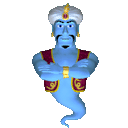
THE LAMP · found it in the same folder as everything else.
click him and he grants one, terms unfavourable.
he is asleep. click to wake him.wishes granted: 0
Pet and feed Zaki
Virtual pet · 2 occupants
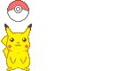
unregistered second pet. wandered in, would not leave, keeps opening the ball
at Zaki. feeding is not required, it eats the electricity.
3D_GALLERY.EXE_□×
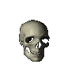
SKULL.3DS ● 24 fps ● still cool
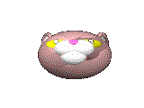
PANTHER.3DS ● renders in 1998 ● unlicensed probably
2 object(s) ● rendering at maximum quality
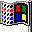
DANCEFLOOR.EXE_□×
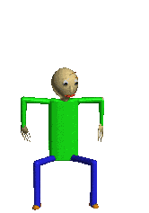
GUEST_01 ● unnamed ● will not stop
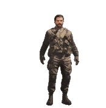
GUEST_02 ● off duty ● 500 frames
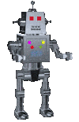
STAFF ● runs the lights ● 9 frames only
3 object(s) on the floor ● music not included ● :DDD
Live Chat
web chat · room=lobby
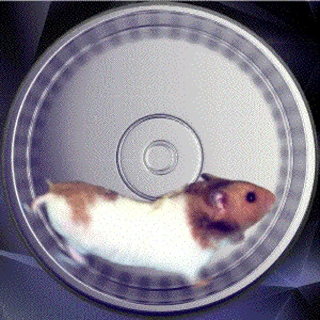
generator no.1
THIS SITE IS POWERED BY HAMSTERS
uptime depends entirely on their mood. no refunds.
 Home
Home About
About Entries
Entries Chat
Chat Kool Webpages
Kool Webpages Guestbook
Guestbook Kool Books
Kool Books Contact
Contact


 BEST VIEWED ON DESKTOP!!
BEST VIEWED ON DESKTOP!!